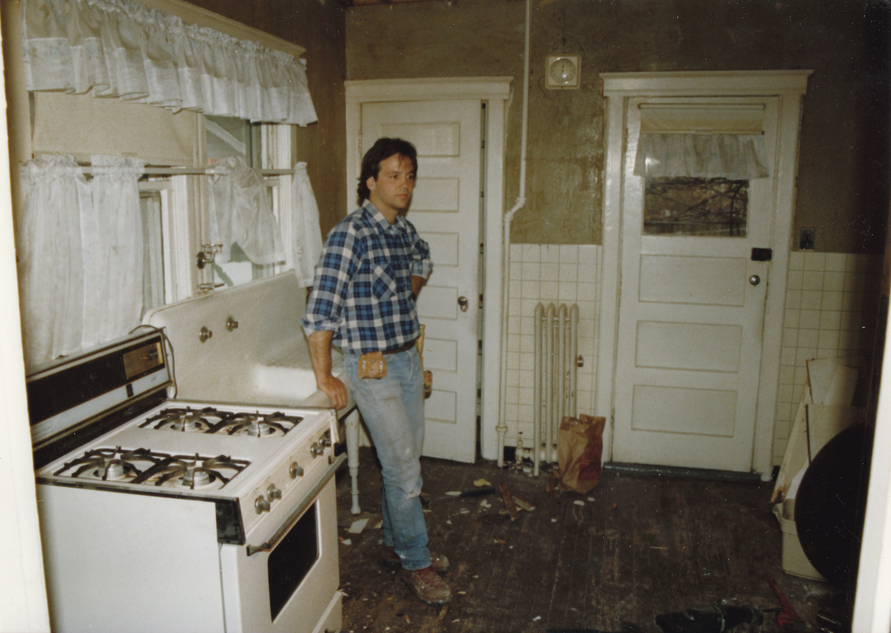
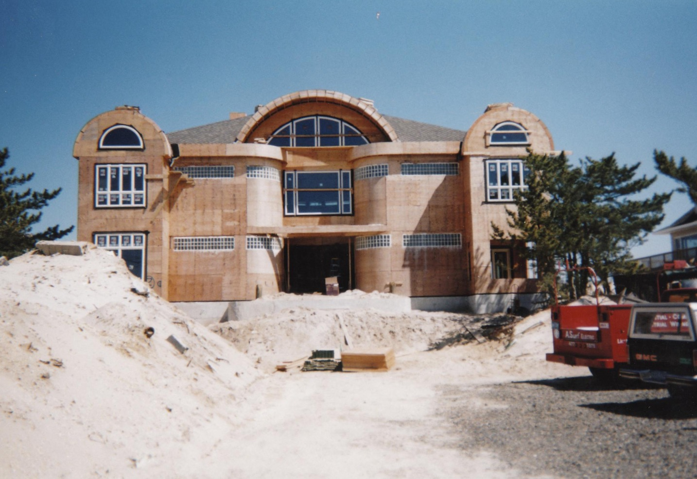
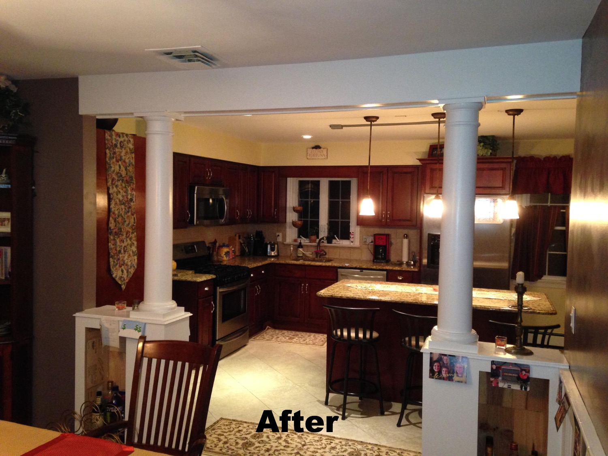
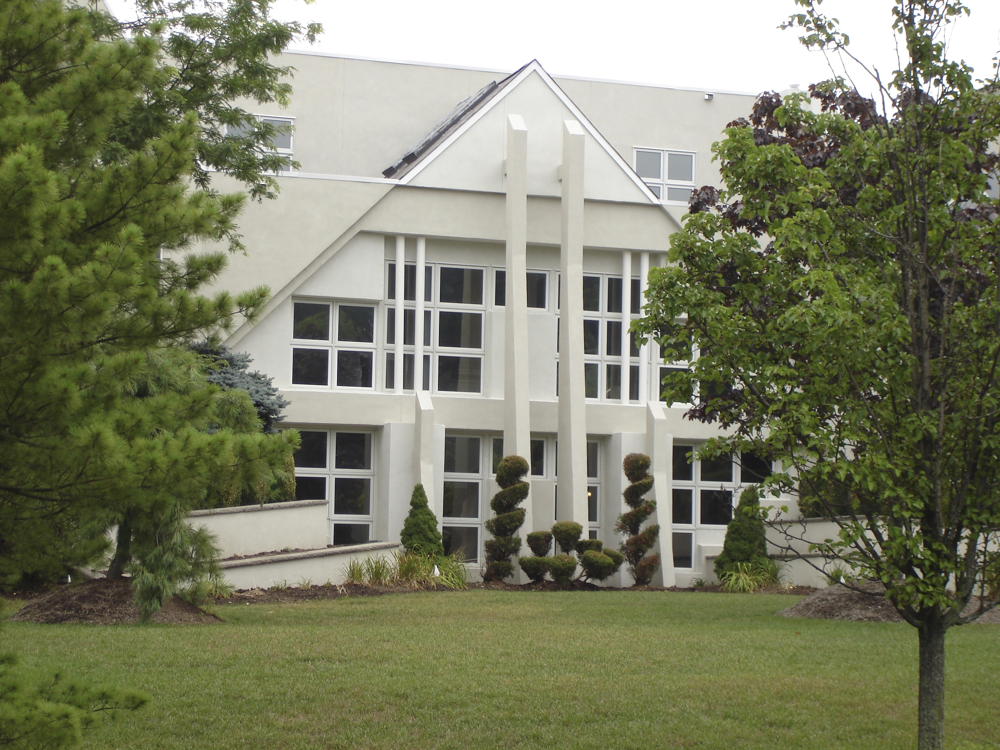
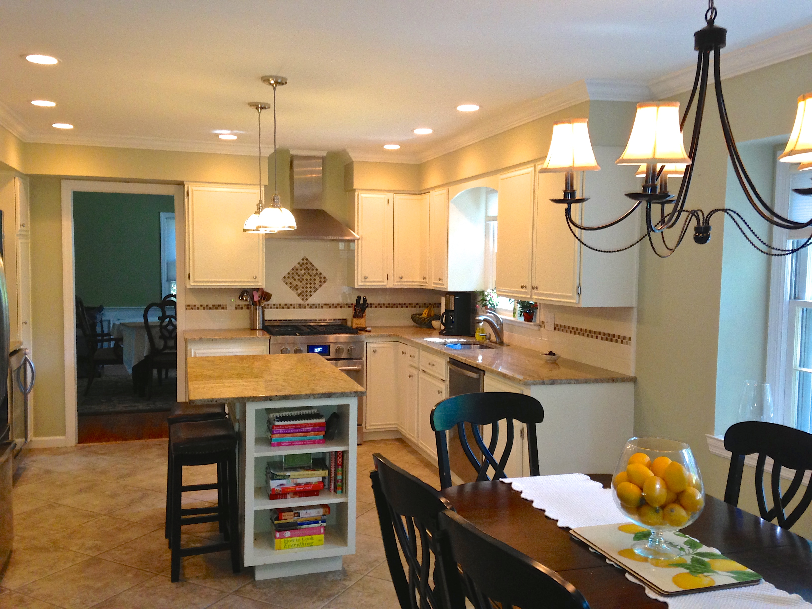
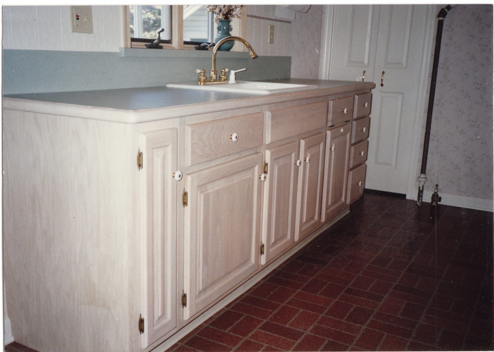
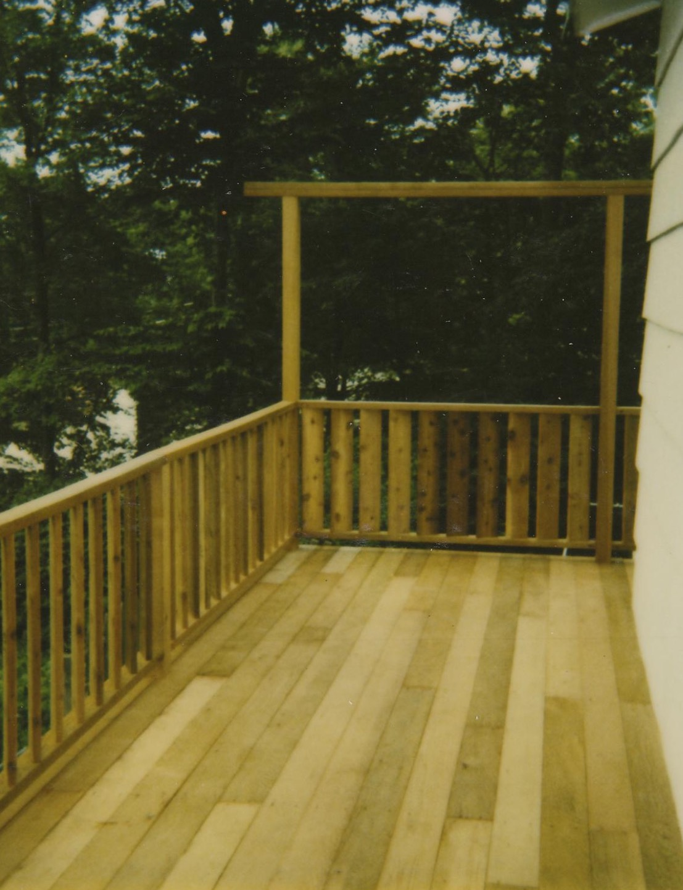

40 Years.
Zero Shortcuts.
Custom homes, construction management, owner’s representation, and major renovations done right — the first time. Licensed & fully insured since 1986.

Built Different Since Day One.
Joe Shadel picked up a hammer as a disgruntled teenager and never put it down. What started as grunt work on local job sites turned into a 40-year career building some of the most demanding residential projects across New Jersey and Florida.
From a 7,000 sq ft oceanfront residence in Ocean County to the custom estates of Harding Township, Mendham, and Chatham, NJ — and now serving the luxury waterfront communities of Snell Isle, Old Northeast, Tierra Verde, St. Pete Beach, Treasure Island, Redington Beach, and Belleair Beach, FL — Joe has earned a reputation for one thing: doing the job right, no matter the complexity. When Hurricane Sandy devastated the Jersey Shore, Joe's builds stood while others didn't.
Beyond building, Joe also serves as construction manager and homeowner’s agent for clients who need an experienced owner’s representative to oversee other contractors, manage complex projects, or simply ensure their investment is protected.
Joe shows up. Joe delivers.
No Job Too Complex.
Custom Home Construction
Ground-up builds from 1,500 to 10,000+ sq ft. Designed and built to your exact vision.
Construction Management
Full-service construction management for luxury residential projects in Morris County, NJ and St. Petersburg, FL. We handle permitting, subcontractor coordination, scheduling, and budget oversight — so your project runs on time and on spec, every time.
Homeowner’s Agent & Owner’s Representative
Hiring contractors in Snell Isle, Tierra Verde, Harding Township, or Mendham and need a trusted expert in your corner? Joe serves as your owner’s representative — vetting bids, enforcing quality standards, and protecting your investment from contract through closeout.
Major Renovations
Whole-home guts, additions, and structural work. We handle the complexity so you don't have to.
Kitchen & Bath
Full remodels from demo to final finish. Cabinets, tile, plumbing, electrical—all under one roof.
Decks & Outdoor Structures
Pressure-treated, composite, and hardwood. Multi-level designs and custom railings.
Storm & Flood Repair
Post-Sandy veterans. We rebuild stronger so you're ready for whatever comes next.
The Portfolio Speaks Louder.






“When we chose to do a remodel, we couldn’t have selected any one better than Joe. He is top notch all the way. During the remodel of our kitchen, office, bar, and half bath, Joe was very personable and patient with me as I was in another state selecting materials to use. He was very professional and helpful during this process and truly went above and beyond.”
“I had used Joe Shadel to convert a bathroom with a soaking tub into a walk in shower. I also used him to remodel two other bathrooms. He did a great job on them. When we needed complex cathedral ceilings repaired after back-to-back hurricanes, Joe’s team covered everything with plastic, went to work, and when we returned the house was clean and the ceilings looked great.”
“Mr. Shadel really bailed us out following Hurricane Helene. Under the most difficult circumstances (hot weather, road closure, lack of power) following flooding, Joe treated the situation on an emergency basis. His remediation efforts resulted in us being able to save floors, walls etc. in order to return the home to living status. I highly recommend this meticulous and experienced craftsman.”
“Joe is not your ordinary contractor. He is extremely personable and truly cares about customer satisfaction. From the initial estimate through completion, Joe was very conscientious and attentive to detail. Another thing that sets Joe apart from most contractors is that he is reliable! He always showed up when he said he would and followed through on his promises.”
“Not only was the work outstanding, but Joe also made himself available to let other workers in for painting, etc. Joe proved his work ethic and attention to detail by discovering our basement was wet and handling the whole thing—removing everything, cleaning it out, providing fans to dry it out, and repairing the problem. I am beyond happy with the renovation and would hire Joe again in a skinny minute!”
“I have a 125 year old Victorian home. Joe helped me update the kitchen/pantry, rebuild front stairs, and repair plaster ceiling problems. He was creative in dealing with ‘old house’ situations and a skilled craftsman who attended to the details required.”
“Joe Shadel and his crew did a first class job on building a new deck for us. He has shown himself to be an experienced licensed contractor who personally supervised and worked on the job at all times, going above and beyond the municipal and state building codes. He is honest, reliable and a real craftsman. No shortcuts! We highly recommend him.”
“Joe is a very reliable contractor who comes when he says he’s going to come, and works closely with the town to make sure the project works to code. He helped us where others failed. I highly recommend him.”
“Joe transformed our 10″×10″ tiny box of a kitchen to a larger kitchen I can entertain in! He’s a perfectionist in a ‘good way.’ During the renovation not a thing was in disarray. He considers all scenarios, knows design & styles very well. I love my kitchen — a job well done!!”
“By far one of the most meticulous and professional contractors I have worked with. He went out of his way to respect the homeowner and their wishes and also made sure all design specs were followed through to the letter. This encompassed structural components, adding a bathroom, and limited access to the basement for materials. If you are looking for high end results, call Joe.”
“Joe is a professional within all aspects of construction. He has done a renovation of my kitchen and dining room that has made entertaining so enjoyable. He communicates in detail and his work is detailed. He arrives when he says he is coming and he completes the job before taking on other jobs. I would recommend Joe for any job, big or small.”
“From start to finish Joe was involved and was always available for questions. He completed additional research for us so we could make the best informed decisions. I can truly say he is the most thorough and detail oriented contractor we have worked with! He takes great pride in his work and takes extra time to make sure it looks perfect.”
“He completely transformed our 70’s style kitchen into a modern looking workspace. He is trustworthy, diligent and precise. I never felt that he took on the job just to finish it — he takes pride in his work and wants to do the job the right way, even if it means a little extra time and effort. I would recommend Joe Shadel without reservation.”
“I’m a civil engineer by trade so I expect the highest quality of work in my home, no short cuts, all jobs done to code, and Joe has never let me down. He maintains extremely high standards, his work in all disciplines is top notch. He purchases quality materials and does a quality job on schedule and within budget.”